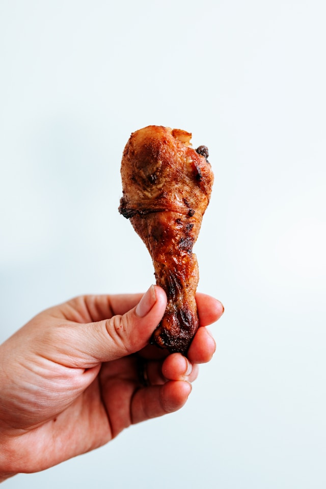
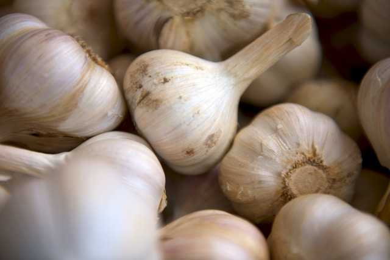
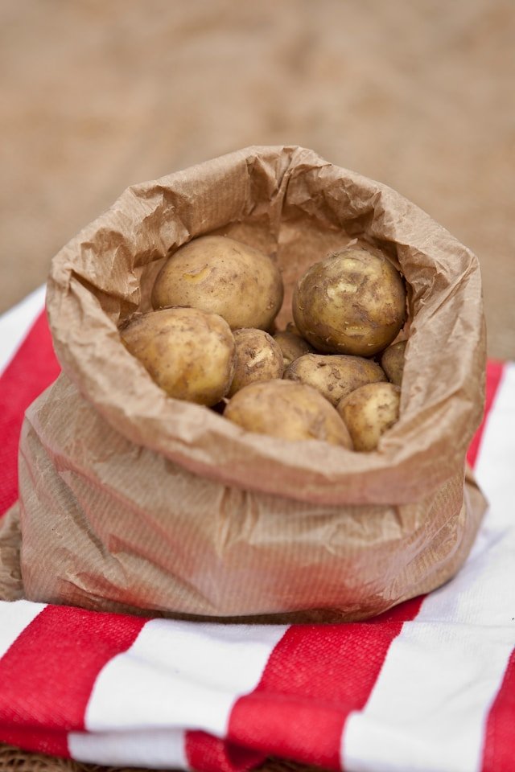

Geri Dön
Fırında Tavuk Baget Tarifi
Malzemeler
-
6 adet tavuk baget

-
2 yemek kaşığı zeytinyağı
-
1 çay kaşığı tuz

-
1 çay kaşığı karabiber

-
1 çay kaşığı pul biber
-
1 çay kaşığı kekik
-
2 diş sarımsak (isteğe bağlı)

-
1 adet limon (isteğe bağlı)
-
1 adet patates (yanında servis için)

Adımlar
-
Fırını Hazırlayın:
- Fırını 200°C'ye (fanlı fırın için 180°C) ısıtın.
-
Bagetleri Hazırlayın
- Tavuk bagetleri yıkayıp kurulayın.
- Sarımsakları ezerek zeytinyağı, tuz, karabiber, kırmızı toz biber ve kekik ile karıştırın.
- Bu karışımı tavuk bagetlerin üzerine iyice sürün. İsterseniz, tavukları bu marinatta 30 dakika bekleterek daha fazla lezzet katabilirsiniz.
- Dilerseniz limonu dilimleyerek tavukların üzerine yerleştirebilirsiniz.
-
Fırınlama
- Tavuk bagetleri fırın tepsisine yerleştirin. Yanında dilimlenmiş patates de ekleyebilirsiniz.
- Tepsiyi önceden ısıtılmış fırına yerleştirin ve yaklaşık 35-40 dakika pişirin. Tavukların dışı kızarıp, içi tamamen pişene kadar fırında tutun.
-
Servis
- Fırından çıkan bagetleri sıcak olarak servis edin. Yanında pişmiş patates dilimleri ve salata ile harika bir öğün oluşturur.